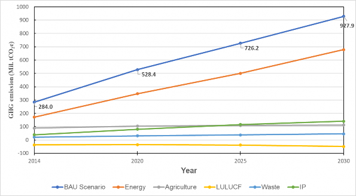
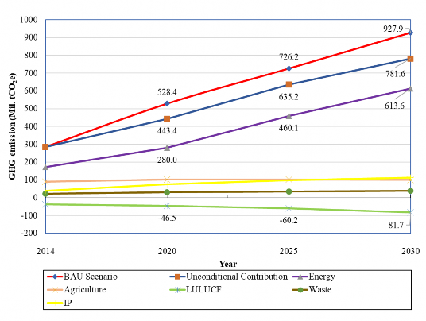
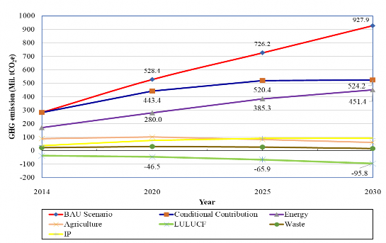

Ha Noi, October 2022
LIST OF TABLES
Table 1. Emissions under the Business-As-Usual scenario 6
Table 2. GHG emission reduction NDC 8
Table 3. GHG emission reduction contribution of the country and by sectors 10
Table 4. Comparison of emission reduction targets in NDC 2020 and NDC 2022 10
LIST OF FIGURES
Figure 1. GHG emissions under the BAU Scenario 6
Figure 2. GHG emissions of the country and by sectors according to the Unconditional Contribution 11
Figure 3. GHG emissions of the country and by sectors according to the Conditional Contribution 11
ABBREVIATIONS
|
BAU |
Business-As-Usual scenario |
|
CNG |
Compressed natural gas |
|
COP |
Conference of the Parties |
|
INDC |
Intended Nationally Determined Contribution |
|
IP |
Industrial processes |
|
IPCC |
Intergovernmental Panel on Climate Change |
|
LNG |
Liquefied natural gas |
|
LULUCF |
Land Use, Land Use Change and Forestry |
|
M&E |
Monitoring and Evaluation (of climate change adaptation activities) |
|
MRV |
Measurement, Reporting and Verification (of greenhouse gas emission reduction activities) |
|
NDC |
Nationally Determined Contribution |
|
NDC 2020 |
Viet Nam’s NDC updated in 2020 |
|
NDC 2022 |
Viet Nam’s NDC updated in 2022 |
|
RDF |
Refuse derived fuel (from plastic and paper waste) |
|
TOE |
Tons of oil equivalent |
|
CO2eq |
CO2 equivalent |
|
UNFCCC |
United Nations Framework Convention on Climate Change |
The Paris Agreement was adopted at the 21st Conference of the Parties to the United Nations Framework Convention on Climate Change (COP21). This is the global legal instrument that stipulates the responsibilities of all Parties concerning climate change response through the implementation of the Nationally Determined Contribution (NDC).
As a developing country that has just started the process of industrialization over the past three decades and is severely affected by climate change and despite many difficulties in terms of resources, Viet Nam has always proven itself responsible and has proactively implemented international commitments on climate change. Viet Nam submitted its Intended Nationally Determined Contribution (INDC) in 2015; signed and approved the Paris Agreement, and developed a National Plan for the implementation of the Paris Agreement in 2016. The Law on Environmental Protection (2020) has a chapter on responding to climate change that stipulates the responsibility in GHG emission reduction and climate change adaptation to implement Viet Nam’s NDC and the Paris Agreement.
At COP26, Viet Nam stated that it “will develop and implement strong greenhouse gas emission reduction measures with its own resources along with the cooperation and support of the international community, especially developed countries, both in terms of finance and technology transfer, including implementing mechanisms under the Paris Agreement, to achieve net zero emissions by 2050”. Viet Nam, together with other countries, pledged to reduce methane emissions by 30 percent from 2020 levels by 2030 and joined the Global Coal to Clean Power Transition Statement, the Glasgow Leaders’ Declaration on Forests and Land Use to prevent and reverse deforestation and land degradation by 2030, and the Adaptation Action Coalition to mobilize resources for climate change adaptation.
The National Steering Committee for Implementing Viet Nam’s Commitments at the 26th UN Climate Change Conference of the Parties (COP26) was established on December 21, 2021, headed by the Prime Minister, and has drastically directed the development and implementation of strategies, action programs, plans, and schemes to implement Viet Nam’s commitment at COP26. Several important documents have been issued by the Government and the Prime Minister, including: Decree on reducing greenhouse gas emissions and protecting the ozone layer; National Climate Change Strategy to 2050; the Scheme on Tasks and Solutions to Implement the Results of COP26; Action Program on Green Energy Transition and Reduction of Carbon and Methane Emissions of the Transportation Sector; National Action Plan on Green Growth for the period 2021-2030; Methane Emission Reduction Action Plan to 2030; the list of sectors and GHG emission facilities required to carry out an inventory of greenhouse gas; develop the scheme on domestic carbon market development in Viet Nam, the national monitoring and evaluation system of climate change adaptation activities. The Minister of Natural Resources and Environment has issued a Circular detailing the implementation of the Law on Environmental Protection on climate change response, Decision promulgating the list of emission factors for GHG inventory. Ministries and sectors are continuing to develop and complete legal regulations, circulars, and technical guidelines to reduce GHG emissions, adapt to climate change under their management.
Implementing Decision 1/CP.21 of COP21, Viet Nam completed the review and update of the NDC in 2020 (NDC 2020). Responding to the United Nations Secretary- General António Guterres’s call, and to manifest Viet Nam’s efforts as well as determination from COP26 up to now, the country decided to update the NDC once more time. Viet Nam's updated NDC 2022 (NDC 2022) has been formulated based on NDC 2020 and contains new points showcasing the efforts of the country to fulfill the commitments at COP26. The review and update of Viet Nam’s NDC have been conducted under the instructions of the Prime Minister and with the Ministry of Natural Resources and Environment taking the lead and active participation of line ministries, experts, scientists, NGOs, research agencies, and development partners through in-person working sessions, and national and sector-level consultation workshops. Official data, valuable experiences, lessons, and studies have been evaluated, analyzed, and utilised.
The contribution to GHG emission reduction in NDC 2022 has significantly increased compared to that in NDC 2020, towards long-term goals identified in Viet Nam’s National Climate Change Strategy to 2050.
Review, update on, and adjustment of the contribution to GHG emission reduction and contribution to climate change adaptation aligning with Viet Nam’s statement at COP26, the National Climate Change Strategy to 2050, and the latest status and forecast of the socio-economic development to 2030.
Update on the analysis of harmonization and co-benefits between GHG emission reduction, climate change adaptation, and achievement of sustainable development and socio-economic development goals; promotion of gender equality, and reduction of risks for vulnerable people.
Further clarification of the challenges of NDC implementation in the current international and national context, addition of the content with the need for international support for NDC implementation.
Addition of the analysis of uncertainty and factors that could result in risks in achieving the goals of Viet Nam's NDC, including uncertainty in the inventory and calculation of GHG emissions; mobilization of global climate finance; joint efforts of countries; impacts from climate change response measures of other countries.
1.2.2 Greenhouse gas emission reduction
Emission reduction targets in the energy, agriculture, LULUCF, waste and industrial processes by 2030 compared to BAU in NDC 2022 are higher than NDC 2020, Unconditional contribution increased from 9% to 15.8% and Conditional contribution increased from 27% to 43.5%.
The implementation of NDC 2022 is in line with net zero target indicated in the National Climate Change Strategy to 2050 and the measures to implement the methane emission reduction action plan.
The assumptions used in the emission reduction calculation have been further updated based on the approved plans of ministries and sectors to implement Viet Nam’s commitments at COP26, taking into account emissions of the air conditioning and refrigeration sub-sector under services and trade and conversion of the use, recovery, and partial destruction of HFCs in industrial processes.
Addition of measures to reduce emissions in industrial processes; Identification of measures to reduce emissions and enhance carbon sequestration in LULUCF sector, identification of measures to reduce methane emissions to achieve the 2030 target of a 30% reduction from 2020 levels by 2030 under the Global Methane Pledge.
Further clarification of the Unconditional contribution and the Conditional contribution, specifically: i) Unconditional contribution: the country’s effort to reduce emissions made possible by resources including: state budget, loan capital, investment of domestic and foreign enterprises, contribution and investment of the people; ii) Conditional contribution: the country’s effort to reduce emissions made possible by the above resources and additional international financing in adequate and appropriate manner through grants, concessional portions of loans, financial resources, technology and capacity building under bilateral and multilateral international cooperation mechanisms, especially under the UNFCCC and the Paris Agreement.
1.2.3. Climate change adaptation
Update on climate change trends and climate projection for the future, analysis of increased risks due to climate change under the 2020 climate change scenario.
Update on Viet Nam’s efforts and achievements on climate change adaptation; in addition, with an analysis of the inadequacies in terms of climate change adaptation that needs to be addressed in the NDC.
Update on the assessment of impacts of climate change on sectors and areas; in addition, with analysis of impacts of climate change on women, the elderly, people with disabilities, children and adolescents, and ethnic minorities.
Update on economic and non-economic losses and damages that occurred in the past and those expected to occur in the future.
Contribution to climate change adaptation including task groups to implement the Resolution of the 13th Party Congress; 10-Year Socio-Economic Development Strategy 2021-2030; National Climate Change Strategy to 2050 and recently approved national strategies related to natural disaster prevention, fisheries development, hydrometeorological development, forestry development and master plan for the Mekong Delta region.
2. GREENHOUSE GAS EMISSION REDUCTION
2.1 Viet Nam’s efforts and achievements in greenhouse gas emission reduction
2.1.1. Policy framework supporting the implementation of GHG reduction targets
Viet Nam has issued many guidelines and policies related to GHG emission reduction, including:
Resolution No. 24-NQ/TW of the Central Committee of the Communist Party of Viet Nam on proactive response to climate change, strengthening natural resource management and environmental protection (2013); Resolution No. 55-NQ/TW of the Politburo on strategic orientations for Viet Nam’s national energy development to 2030, with a vision to 2045 (2020); Conclusion No. 56-KL/TW of the Politburo on further implementing the Resolution of the 7th Party Central Committee, term XI on promoting proactive response to climate change, strengthening natural resource management and environmental protection (2019).
Laws and policies related to GHG emission reduction: Law on Environmental Protection (2020); Law on Forestry (2017); Law on Economical and Efficient Use of Energy (2011); National Climate Change Strategy to 2050 (2022); National Strategy on Green Growth for the period 2021-2030 (2021); Viet Nam’s Forestry Development Strategy for the period 2021-2030 (2021); Viet Nam's Renewable Energy Development Strategy to 2030, with a vision to 2050 (2015); Viet Nam’s Transportation Development Strategy to 2020, with a vision to 2030 (2013); National Energy Development Strategy to 2020, with a vision to 2050 (2007).
Programs, master plans, plans and projects directly related to GHG emission reduction include: Methane Emission Reduction Action Plan to 2030 (2022); the Ministry of Foreign Affairs' Climate Diplomacy Action Plan aiming to implement Viet Nam’s commitments at COP26 in the period 2022-2025 (2022); Action Program on Green Energy Transition and Reduction of Carbon and Methane Emissions of the Transportation Sector (2022); Action Plan of Construction sector in Climate Change Response for the period 2022-2030, with vision to 2050 in order to implement Viet Nam’s commitments at COP26 (2022); Action Plan of Ministry of Industry and Trade to implement Viet Nam’s commitments at COP26 (2022); Environmental Protection Plan for Industry and Trade in the period of 2025-2030 (2020); Regulations on Incentive Mechanism for Solar Power Development in Viet Nam (2020); National Action Program on Sustainable Production and Consumption for the period 2021-2030 (2020); National Program on Economical and Efficient Use of Energy in the period of 2019-2030 (2019); Scheme on Development of Organic Agriculture in the period of 2020 - 2030 (2018); Scheme on Sustainable Forest Management and Forest Certification (2018); Master Plan on Development of Viet Nam's Gas Industry to 2025, orientation to 2035 (2017); Plan for the Implementation of the Paris Agreement on Climate Change (2016).
2.1.2. Efforts for greenhouse gas emission reduction
Due to the early implementation of GHG emission reduction measures, Viet Nam has achieved some remarkable results in the energy, transportation, agriculture, LULUCF, waste and industrial processes sectors, specifically as follows:
Improving energy efficiency and saving, reducing transmission loss, and strongly developing renewable energy have made significant contributions to reducing GHG emissions in the energy sector. It is estimated that the applied measures on economical and efficient use of energy allowed a reduction of about 67.5 Mt CO2eq in 2020 compared to the BAU. Regarding renewable energy development, by 2020, the total hydropower capacity reached 22,022 MW (of which small hydropower reached 3,674 MW); wind power reached 630 MW; biomass power reached 570 MW; solar power, including rooftop solar power, reached 16,491 MW.
In the transportation sector, the goal of reducing GHG emissions has been integrated in the process of updating, adjusting and developing sector strategies and planning; the Action Program on Green Energy Transition and Reduction of Carbon and Methane Emissions of the Transportation Sector has been implemented, and the use of renewable energy in public lighting and traffic signals has been increased.
In the agriculture sector, a wide range of activities to reduce GHG emissions have been carried out. A number of measures to reduce GHG emissions have been applied such as: water withdrawal in the middle of the crop to reduce methane emissions; improvement of ruminant rations; treatment of livestock waste and crop by-products; inefficient conversion of rice land; integrated farming and modernization of farming systems.
In the LULUCF sector, many efforts have been proactively made to reduce GHG emissions and increase carbon sequestration; stabilize the rate of forestation, and improve forest quality. In 2020, there has been a reduction of 11.1 MtCO2eq through activities of increasing planted forest area, protecting natural forests, etc., aiming to achieve the goal of increasing forest cover to 42% by 2030 and maintaining a stable level to 2050.
In the waste sector, many solid waste treatment plants have been built and put into operation with the use of new technologies in waste treatment in combination with compost production, contributing to reducing landfill amounts and limiting environmental impacts. Domestic and industrial wastewater is gradually treated gearing toward the optimization of treatment conditions along with the application of biotechnology or methane recovery solutions to reduce GHG and methane emissions.
In the industrial processes sector, solutions to reduce GHG emissions have been applied, including replacing clinker in cement composition; applying advanced technology of chemical and steel industries. In 2020, 4.06 MtCO2eq has been reduced in the sub-sectors of mining industry, construction materials and chemical industry.
With a wide range of activities implemented to reduce GHG emissions in the energy, transportation, agriculture, LULUCF, waste, and industrial processes sectors, Viet Nam obtained relatively great results of GHG emission reduction in the period 2014-2020, and the estimated emission reduction by 2020 was about 85 Mt CO2eq. Increasing education in schools and promoting communication on climate change have encouraged green lifestyles and behaviors, contributing to reducing GHG emissions in the community.
2.2 Business-As-Usual (BAU) scenario
The year of 2014 continues to be used as the base year for emissions under the business-as-usual scenario. This is the year of which the results of the GHG inventory were published in the Third National Communication of Viet Nam sent to the UNFCCC in 2019, and also the base year that Viet Nam used for formulating its iNDC, NDC 2020, the National Climate Change Strategy to 2050, and many other important documents. GHG emission sources/sinks are identified for the energy (including energy in transportation), agriculture, LULUCF, waste, and IP sectors.
Table 1. GHG emissions under the BAU scenario
Unit: Mt CO2eq
|
Year |
Energy |
Agriculture |
LULUCF |
Waste |
IP |
Total |
|
2014 |
171.6 |
89.8 |
-37.5 |
21.5 |
38.6 |
284.0 |
|
2020 |
347.5 |
104.5 |
-35.4 |
31.3 |
80.5 |
528.4 |
|
2025 |
500.7 |
109.2 |
-37.9 |
38.1 |
116.1 |
726.2 |
|
2030 |
678.4 |
112.1 |
-49.2 |
46.3 |
140.3 |
927.9 |
Source: NDC 2020

Figure 1. GHG emissions under the BAU Scenario
The BAU scenario was developed based on the medium economic development scenario, energy demand, GDP growth by sectors, GDP structure by sectors, population growth, forest and forest land planning, and the quantity of livestock and arable land. The Revised 1996 IPCC Guidelines for National Greenhouse Gas Inventories and the 2000 IPCC Good Practice Guidance have been used to calculate and forecast GHG emissions to 2030. Regarding GHG emissions and removals in the LULUCF sector, the IPCC Good Practice Guidance for the LULUCF sector in 2003 has been used to calculate and forecast GHG emissions/removals to 2030.
2.3. Measures to reduce greenhouse gas emissions by sectors
The national measures to reduce GHG emission for the period 2021-2030 have been identified for the energy, agriculture, LULUCF, waste, and IP sectors. Criteria for selecting GHG emission reduction measures include: (i) cost/benefit efficiency; (ii) feasibility in implementation; (iii) harmonization and co-benefits with climate change adaptation, socio-economic development; and (iv) consistency with national and sectoral development plans for the period 2021-2030 towards the goals of the National Climate Change Strategy to 2050. Specific measures to reduce GHG emissions include:
Energy usage: Use of high-efficiency air conditioning and refrigeration equipment in commercial and residential services; use of energy-saving lighting; use of solar water heaters; use of biogas and cleaner fuel instead of coal for household cooking in rural areas; use of measures to improve energy efficiency in industries; use of high- performance electrical equipment, high efficiency refrigeration equipment in services, commerce and trade; improvement, development and application of technology in the production of building materials; efficient use of energy in transportation; limitation of fuel consumption for motor vehicles; conversion of modes of transportation of passengers and goods; increase of the load factor of cars; use of CNG and biofuels; use of electric motorbikes, cars, and buses.
Energy supply: Development of renewable energy such as small hydroelectricity, wind energy, solar energy; development of biomass thermal power, incineration and landfill waste power, and biogas power; use of combined gas turbine technology using LNG; development of supercritical thermoelectric technologies.
Application of integrated crop management solutions; application of farming technologies such as alternating wet and dry irrigation and SRI in areas with adequate infrastructure; modernization of watering and fertilizing perennial plants; mid-crop water withdrawal in rice cultivation; conversion of inefficient rice land into dry cropland or shrimp-rice land; composting and organic agriculture; replacement of nitrogen fertilizers with slow-dissolving and slow-digesting fertilizers; improvement of ruminant rations; circulation of agricultural waste as organic fertilizer; development of using biogas. Measures to reduce methane emissions in sub-sectors of agriculture, especially wet rice farming and management of livestock waste and agricultural by-products are those carried out for the implementation of Viet Nam’s statement at COP26 so as to reduce methane emission by 30% from 2020 levels by 2030.
2.3.3. Land use, land use change, and forestry
Protection of existing natural forest areas in mountainous areas, with priority given to hot spots of deforestation and forest degradation; protection of coastal protection forests and special-use forests; restoration of protection forests and special- use forests; improvement of the quality and carbon stock of poor natural forests; improvement of productivity and carbon stock of large timber plantations; scaleup of agroforestry models to improve carbon stocks and conserve soil; sustainable forest management and forest certification. The measures to reduce emissions applied in the LULUCF sector manifest Viet Nam’s determination to implement the Glasgow Leaders’ Declaration on Forests and Land Use.
Implementation of measures to manage and reduce solid waste generation; development and application of solid waste recycling technologies; production of compost and refuse-derived fuel (RDF); recovery, burning and use of methane from solid waste landfills; anaerobic treatment with methane recovery for power generation; optimization of treatment conditions of domestic and industrial wastewater; application of biotechnology to remove methane from domestic wastewater treatment process; recovery of methane from industrial wastewater treatment.
Use of natural mineral additives to replace clinker; use of additives that are waste from the clinker replacement industry; application of the best technologies (improvement of BOF technology) to reduce N2O emissions for the chemical industry; application of the best technologies to reduce emissions in the steel industry; use of climate-friendly refrigerants, and recovery, recycle and destruction of HFCs.
2.4. Contributions to greenhouse gas emission reduction
The content on the Nationally Determined Contribution to GHG emission reductions is summarized in Table 2. Details of emission reductions by sectors are presented in Table 3.
Table 2. National determined contribution to GHG emission reduction
|
Scope |
Economy-wide, including the following sectors:
|
|
Type of Contribution |
GHG emission reduction compared to the BAU scenario. |
|
Main greenhouse gas |
Carbon dioxide (CO2), Methane (CH4), Nitrous oxide (N2O), Halocarbons (HFCs). |
|
Period |
From 1/1/2021 to 31/12/2030. |
|
Methodology for estimating GHG emissions and data |
|
|
Metric applied |
|
|
Emissions under the Business-As-Usual scenario (BAU) |
The BAU scenario was developed based on the assumption of economic growth in the absence of climate change response policies. BAU was developed for the period from 2014 to 2030 for 5 sectors including: energy, agriculture, LULUCF, waste, and IP.
- 2020: 528.4 Mt CO2eq - 2025: 726.2 Mt CO2eq - 2030: 927.9 Mt CO2eq |
|
Unconditional Contribution |
With the state budget, loans, investment from domestic and foreign enterprises, contributions and investments of the citizen, Viet Nam aims to reduce 15.8% of total GHG emissions by 2030 compared to BAU, equivalent to 146.3 Mt CO2eq |
|
Conditional Contribution |
With the above resources and additional international financing in adequate and appropriate manner through grants, concessional loans, financial resources, technology and capacity building under bilateral and multilateral international cooperation mechanisms, especially under UNFCCC and Paris Agreement, Viet Nam aims to reduce 43.5% of total GHG emissions by 2030 compared to BAU, equivalent to 403.7 Mt CO2eq. |
The Unconditional contribution in NDC 2022 has increased significantly compared to that in NDC 2020 in terms of both amount and ratio of emission reduction compared to BAU. Accordingly, the amount of emission reduction in NDC 2022 is 146.3 Mt CO2eq compared to 83.9 Mt CO2eq in NDC 2020 (that of additional reduction is 62.4 Mt CO2eq). The ratio of emission reduction compared to BAU in NDC 2022 is 15.8% compared to 9% in NDC 2020 (that of additional reduction is 6.8% compared to BAU).
The Conditional contribution in NDC 2022 has significantly increased compared to that in NDC 2020. Accordingly, the amount of emission reduction in NDC 2022 is 403.7 Mt CO2eq compared to 250.7 Mt CO2eq in NDC 2020 (that of additional reduction is 153.0Mt CO2eq). The ratio of emission reduction compared to BAU in NDC 2022 is 43.5% vs 27.0% in NDC 2020 (that of additional reduction is 16.5% compared to BAU) (Table 4).
Table 3. National contribution to GHG emission reduction by sectors by 2030
|
Sector |
GHG emission reduction Unconditional Contribution |
GHG emission reduction with international support |
GHG emission reduction Conditional Contribution |
||||||
|
Compared to BAU scenario |
Reduction amount (Mt CO2eq) |
Financial need (millions USD) |
Compared to BAU scenario |
Reduction amount (Mt CO2eq) |
Financial need (millions USD) |
Compared to BAU scenario |
Reduction amount (Mt CO2eq) |
Financial need (millions USD) |
|
|
Energy |
7.0 |
64.8 |
14,464.4 |
17.5 |
162.2 |
46,097.0 |
24.4 |
227.0 |
60,561.4 |
|
Agriculture |
1.3 |
12.4 |
2,122.8 |
4.1 |
38.5 |
13,979.4 |
5.5 |
50.9 |
16,102.2 |
|
LULUCF* |
3.5 |
32.5 |
3,927.4 |
1.5 |
14.1 |
1,567.4 |
5.0 |
46.6 |
5,494.9 |
|
Waste |
1.0 |
8.7 |
916.6 |
2.2 |
20.7 |
1,809.5 |
3.2 |
29.4 |
2,726.1 |
|
IP |
3.0 |
27.9 |
310.0 |
2.4 |
21.9 |
1,640.2 |
5.4 |
49.8 |
1,950.1 |
|
Total |
15.8 |
146.3 |
21,741.2 |
27.7 |
257.4 |
65,093.4 |
43.5 |
403.7 |
86,834.7 |
Note (*): increasing GHG removal
Table 4. Comparison of emission reduction targets in NDC 2020 and NDC 2022
|
Sector |
Unconditional contribution |
Conditional contribution |
||||||
|
NDC 2020 |
NDC 2022 |
NDC 2020 |
NDC 2022 |
|||||
|
(%) |
(MtCO2eq) |
(%) |
(MtCO2eq) |
(%) |
(MtCO2eq) |
(%) |
(MtCO2eq) |
|
|
Energy |
5.5 |
51.5 |
7.0 |
64.8 |
16.7 |
155.8 |
24.4 |
227.0 |
|
Agriculture |
0.7 |
6.8 |
1.3 |
12.4 |
3.5 |
32.6 |
5.5 |
50.9 |
|
LULUCF |
1.0 |
9.3 |
3.5 |
32.5 |
2.3 |
21.2 |
5.0 |
46.6 |
|
Waste |
1.0 |
9.1 |
1.0 |
8.7 |
3.6 |
33.1 |
3.2 |
29.4 |
|
IP |
0.8 |
7.2 |
3.0 |
27.9 |
0.9 |
8.0 |
5.4 |
49.8 |
|
Total |
9.0 |
83.9 |
15.8 |
146.3 |
27.0 |
250.8 |
43.5 |
403.7 |
Note (*): increasing GHG removal
National GHG emissions by sectors under the Unconditional contribution are presented in Figure 2.

Figure 2. National GHG emissions by sectors under the Unconditional Contribution
National GHG emissions by sectors under the Conditional contribution are presented in Figure 3.

Figure 3. National GHG emissions by sectors under the Conditional Contribution
Climate change in Viet Nam through monitoring data
Climate change in Viet Nam has continued to develop according to the trends identified in NDC 2020. Climate extremes were recorded with higher intensity and frequency. Between 1958 and 2018, the annual average temperature of the whole country increased by about 0.89oC, an equivalent of 0.15oC/decade; the annual average precipitation of the whole country increased by 2.1%, with the most increase in the South Central Coast and decrease in northern and southern parts of Central Highlands; the number of strong typhoons was on the rise; the number of hot days and droughts increased; the number of cold and freezing cold days decreased; extreme rainfall increased; and average sea levels at monitoring stations increased by 2.74 mm/year, and 3.0 mm/year alone during 1993 - 2018.
3.1.2. Projections of climate change in Viet Nam toward 2100
According to latest version of Viet Nam’s Climate Change Scenario 2020 :
Temperature: Under the medium scenario (RCP4.5), the annual average temperature of the whole country would increase by 1.2-1.7oC by mid-century and by 1.6-2.4oC by the end of the century. Under the high scenario (RCP8.5), annual average temperature would increase by 1.7-2.3oC by mid-century and 3.2-4.2oC by the end of the century. The temperature in the North would increase higher than that in the South. Extreme temperatures are likely to increase.
Rainfall: Under the medium scenario, annual rainfall would generally increase by 10-15% by mid-century and 10-20% by the end of the century. Under the high scenario, annual rainfall would increase by 10-15% by mid-century and 10-25% by the end of the century; some regions in the Northeast might witness an increase of over 40%. The average one-day maximum rainfall would rise across the country (10-70%) compared to the base period (1986-2005).
Extreme weather/climate events: The number of strong to very strong typhoons would increase. The summer monsoon would start earlier and end later. The number of severely cold days in Northern provinces would decrease. The number of hot days would increase. Droughts would be harsher.
Sea level rise and flooding risks due to sea level rise: Under the high scenario, by the end of the century, the average sea level along the entire coastline could increase by 73 cm (49÷103 cm). If the sea level rises by 100cm, risks of permanent flooding (% of areas) of areas are as follows: 47.3% in the Mekong River Delta, 13.2% in the Red River Delta; 1.9% in Quang Ninh province; 1.5% in Central coastal provinces; 17.2% in Ho Chi Minh City; 4.8% in Ba Ria - Vung Tau province.
3.1.3. Increased climate-induced risks
Viet Nam is regarded as one of the most vulnerable countries to climate change. Increased exposure to climate change is the main cause of increased economic losses from natural disasters. With a coastline of 3,260 km and islands, Viet Nam will face the risk of climate change and sea level rise. Delta and coastal regions, especially coastal cities with high population densities that haven’t integrated climate change in urban and spatial planning will face increased risks.
The Northern mountainous and the Central regions are threatened by the risk of flash floods and landslides. The Central Coastal and Central Southern regions, the Red River Delta and the Central Highlands face the risks of droughts, water shortages and increased desertification. The Mekong Delta is at risk of flooding due to sea level rise, land subsidence and saline intrusion.
The poor, ethnic minority groups, people whose livelihoods depend on the climate, and the elderly, women, children, and people with chronic illnesses are those with the highest level of vulnerability.
Agriculture, biodiversity, water resources, public health, residential areas, and physical infrastructure are highly vulnerable due to their high exposure and sensitivity to natural disasters and extreme weather events. Climate change is an existential threat to the goals of poverty reduction and sustainable development. Loss and damage caused by climate change in some regions may reverse long-term gains.
Increased frequency and intensity of extreme weather events leads to increased risks for regions, sectors and people. Due to the impact of climate change and sea level rise such as flooding leading to loss of agricultural land, water for agricultural irrigation, water for domestic and industrial purposes contaminated with saltwater, people’s lives are seriously affected.
3.1.4. Impacts of climate change on sectors and regions
Natural resources and environment
Water resources: In recent years, water flows of main river basins have been lower than the average for many years. Water flows in the dry season decrease, the water levels reach historic lows in many places, droughts and water shortages happen more frequently, and saline intrusion extends further into the mainland. Under climate change scenarios, in most river basins, flows during the flood season tend to increase; high and extreme floods occur with higher frequency and severity.
Land resources: Prolonged heat and droughts increase the risk of arid soil, reducing soil quality. Increased droughts during the dry season and increased rainfall during the rainy season cause a rise in erosion and landslides in riverside and upland areas. Flooding due to sea level rise is one of the major threats to land resources of the delta and coastal areas.
Forest resources: Increased heat will increase the risk of forest fires. Rising temperature, high humidity, heavy rain, strong wind, degraded land, and other factors create favorable conditions for pests and insects to grow and spread, severely affecting the conservation and development of forest ecosystems. Reduced area due to forest fires, pests and diseases, as well as changes in the growth and development of forest ecosystems will affect the output and value of forest products.
Sea and island resources: Rising sea temperature changes the growing season, increasing the outbreak of phytoplankton, which is detrimental to the growth of seagrasses. Climate change increases ocean acidification; strong storms destroy coral reefs, grasslands, give rise to species modification, and decrease marine fish resources. The islands and island groups will bear the brunt of climate change impact.
Mineral resources: Rising sea level may cause soil, rock and ore to be inundated, contaminated with salt and alum, increasing mining and processing costs. Climate change may also facilitate the formation of new ore bodies. Some types of heavy minerals found in solid rocks (gemstones, gold, titanium, etc.) can easily accumulate over time and form placer deposits and weathered mines.
Biodiversity: Climate change and sea level rise can change the structure and distribution of species and biodiversity of ecosystems. Rising temperature will change the distribution and structure of biomes. Sea level rise and increased storm intensity change the composition of sediments, salinity, and pollute water, degrade and threaten mangroves and species.
Agriculture and rural development
Cultivation: Viet Nam’s rice and corn yields could decline by 8.8% and 18.7% in 2030, and 15.1% and 32.9% in 2050 respectively. If the sea level rises by 100cm, 32.2% of agricultural land is at risk of flooding. Under the climate change scenario, if rice yield and cultivation area remain unchanged with no adaptation measures, Viet Nam will run the risk of losing 21.4% of rice production by 2100.
Husbandry: Impacts of climate change on husbandry include changes in the production and quality of animal feed, and increase in disease outbreaks. Pig farming is expected to decrease by about 8.2% in terms of headcount.
Forestry: Climate change and extreme weather events will increase the risk of forest fires, especially in the Northwest, North Central and Central Highlands; affect the distribution of biodiversity in sensitive forests such as dipterocarp forests, mangroves, evergreen broadleaf forests; increase the risk of developing forest pests and diseases; affect the productivity and suitability of planted forests; change the distribution and risk of biodiversity loss, especially for species with narrow ecological distribution.
Aquaculture: Saline intrusion will significantly reduce areas of freshwater aquaculture, affecting the ecological environment, and changing biodiversity.
Transportation infrastructure
Storms and heavy rains cause flooding and erosion, damaging traffic works and equipment in ports and wharves; sea level rise and spring tide may cause flooding of roads, coastal stations, port and wharves infrastructure; storms, fog and heavy rain affect aviation activities; saline intrusion causes structural corrosion and damage equipment. The roadways sector is heavily affected by climate change, followed by railways and inland waterways. The maritime and aviation sectors are insignificantly affected. Mountainous areas in the North, Central Coast and Central Highlands are at risk of erosion and landslides. The Red River Delta and the Mekong River Delta regions are at risk of flooding due to sea level rise. Central coastal provinces face risks of inundation and erosion caused by rain and floods. All of these risks have an impact on transport infrastructure.
Urban development and housing
Sea level rise may cause the inundation of metropolises such as Ho Chi Minh City as well as cities in the Mekong River Delta and along the Central Coastal regions. Municipalities in the Northern mountainous, hilly region and the Central regions are often affected by extreme rain and post-storm circulation, causing floods, flash floods and landslides. Climate change also affects water resources and water supply systems.
Tourism
Climate change has direct impacts on tourism resources, infrastructure and travel activities. Tourism service facilities, accommodations and entertainment facilities are damaged or degraded under the impact of typhoons and floods. Climate change also indirectly affects tourism activities through its effects on other sectors, such as transport, energy, water management, and land-use, etc.
Public health
Climate change will adversely affect human health, especially that of the elderly, women, children, and people with chronic illnesses. According to statistics, an average temperature increase of 1°C results in a 3.8% increase of hospitalisation rate for children aged under 5 due to respiratory infections. Climate change facilitates the development of vector-borne diseases, increasing the likelihood of outbreaks and spread of diseases, such as influenza A, diarrhea, cholera, dysentery, malaria, dengue fever, yellow fever, typhoid, viral encephalitis, severe acute respiratory syndrome, plague, and zika.
Industry and trade
Industry: Rising temperatures lead to increases in energy consumption in industries as well as costs of ventilation and cooling for mines and reduce the efficiency and output of power plants. Rain, storms and sea level rise will affect the operating process, increasing the cost of maintenance and repair works; affect the supply and consumption of energy; increase the risk of inundation in industrial zones. If the sea level rises by about 100 cm, most coastal industrial zones will suffer from flooding of between 10% and 67% of their total areas.
Energy: Increased temperatures increase the energy demand due to the use of cooling equipment. Unusual rainfall and water flows affect the supply capacity and production plan of hydroelectricity, damage the electricity supply infrastructure, increase the cost of new investment, renovation, repair and upgrading of equipment and electricity distribution network. Sea level rise has negative impacts on power plants, power transmission systems, substations, fuel systems, mines, coal yards and other energy-related facilities in coastal areas.
Trade: Climate change can affect commercial infrastructure through local flooding, impacting the storage and circulation of goods. Sea level rise will affect seaports, river ports as well as trade and logistics centres in coastal areas. Different climate change responses in different countries could also affect global, regional and domestic trade.
For geographical areas
Delta areas: The delta areas will face risks of inundation due to sea level rise. Increased saline intrusion and droughts bear serious impacts on freshwater supply, reducing water quality; rice yield may decrease between 8% and 15% by 2030, and possibly 30% by 2050. Other threats are also on the rise, such as lack of water for domestic use, negative effects on the aquaculture and fishing environments, increased crop diseases, degradation of soil, and the loss of biodiversity and rare genetic resources.
Coastal areas: Coastal areas of Viet Nam are severely affected by sea level rise and such climate-related hazards as typhoons and tropical depressions, floods, and landslides. Sea level rise will increase the risk of inundation in coastal areas. Climate change accelerates soil degradation processes, increases saline intrusion area, reduces rice production and creates many other environmental consequences; degrades biodiversity in coastal areas, changes the ecosystems of lowland areas; shrinks the area of forests and natural vegetation.
Mountainous areas: Rising temperatures will affect agriculture, biodiversity, energy production and consumption, and public health. Floods will affect agriculture, water resources, transportation, people’s health and lives. The heavily affected groups are mainly people in mountainous areas, especially ethnic minorities and the elderly, women and children. Under the impact of heavy rains caused climate change, the intensity of flash floods tends to increase, causing greater impacts on people’s lives.
For the vulnerable groups
Women: Rising temperatures, prolonged heatwaves, and droughts increase stress, pressure and anxiety in households, which can lead to violence against women. Climate and temperature related illnesses are increasing in frequency, which poses significant challenges to maternal health.
Ethnic minorities: Climate change is one of the major causes leading to an increase in poverty and falling back into poverty among ethnic minorities. Ethnic minority groups, who heavily rely on natural resources, have limited adaptive capacity as well as access to markets and financial services for post-disaster adaptation and recovery, putting them at risk of sinking deeper into poverty, and being unable to develop.
Children and adolescents: Rising temperatures, prolonged heatwaves and droughts increase diseases in children and adolescents. An increase in the number of hot days will affect children’s ability to concentrate and study, as well as the teaching capacity of teachers. Floods affect children’s opportunities to access education due to loss of livelihood, which may result in dropping out of school and exposure to environmental hazards and damaged infrastructure after natural disasters.
The elderly: Viet Nam is one of the fastest aging countries in the world. The migration of young couples in pursuit of better economic opportunity often translates into a burden for the elderly as they have to take care of their families and grandchildren, preventing them from accessing “nonagricultural job opportunities".
People with disabilities: Climate change has a strong impact on people with disabilities due to their high levels of vulnerability, limited ability to take adaptation actions and participate in adaptation planning. This group also faces higher risk in case of emergency relocation. Damage and disruption to health care services can lead to a decline in their wellness and an increased risk of other diseases.
Historical loss and damage: Between 2011 and 2020, extreme climate events
have caused severe economic damage, with total losses estimated at VND 229,958 billion (an equivalent of USD 10 billion at 2022 exchange rates). On average, Viet Nam suffers about USD 2.4 billion worth of direct damage in public and private property (equivalent to 0.8% of GDP) due to extreme weather events. Moreover, taking into account the overall costs of environmental degradation, for 2020, climate-induced losses are estimated to be at around USD 10 billion, equivalent to 3.2% of GDP. In 2011, 2012, 2018 and 2020, there were 5,929 classrooms and functional buildings destroyed and damaged, and 2,723 school sites affected. More than 204,000 hectares of forest were damaged in 2012, 2018, and between 2020 and 2021.
Between 2011 and 2020, 2,153 people died, 316 people went missing, and 4,117 people were injured due to natural disasters. Post-disaster losses also include disease outbreaks caused by contaminated drinking water and mental health problems caused by trauma, anxiety, and stress. Climate change is also one of the reasons for increasing migration and forcing tens of thousands of households to permanently relocate, risking the loss of cultural identity and local knowledge.
Future loss and damage: Climate change will be one of the factors impeding Viet Nam’'s growth. Without effective adaptation measures, a temperature increase of 1.00C and 1.50C could cause losses of about 1.8% of GDP and 4.5% of GDP respectively; as well as economic losses of about USD 4.3 billion in the next 10 years. If the sea level rises and temperature increases as in the worst case scenario, it is estimated that 3.1 million Vietnamese people will have to migrate internally by 2050.
Under the high climate change scenario, the flood risk level of urban areas is expected to increase to 7%. It is estimated that by 2050, the loss of houses due to climate- induced storms and floods in the Mekong River Delta will be at USD 2.1 billion, an increase of 11% compared to current level. Increased rainfall can create risks of landslides and flooding for about 20% of the total length of the national highway network, and 20% of the total length of the railway network. If the sea level rises by 100 cm, about 4% of the railway system, over 9% of the national highway system and about 12% of the provincial roadway system would be affected. Disruption of railway lines can lead to economic losses of USD 2.3-2.6 million/day. Rising sea levels could cost agriculture USD 43 billion. The Mekong Delta is the area that suffers the most, followed by the Red River Delta. About 1.1 million tons of farmed aquaculture, or USD 935 million, are at risk of loss from flooding every year. If the sea level rises from 75 to 100 cm, then 78 out of 286 “critical natural habitats” (27%), 46 conservation areas (33%), 9 biodiversity areas of national and international importance (23%) and 23 other biodiversity areas will be severely impacted. The majority of the coastal industrial zones will be flooded. It is estimated that up to 35% of construction works in coastal areas will be eroded; 42% of coastal hotels are located near landslide areas; and 2/3 of the dike system (over 2,659 km) may not meet safety standards.
In addition to the already identified economic losses, Viet Nam is also at a high risk of non-economic losses, which include loss of human lives, negative impacts on people’s health or loss of opportunities due to the relocation of economic zones. Non- economic losses also include loss of land due to erosion, loss of cultural heritage and local knowledge, and loss of biodiversity and ecosystem services.
3.2. Viet Nam’s efforts and achievements in climate change adaptation
Viet Nam has issued and implemented many guidelines, policies, strategies, programs and plans in its efforts to respond to climate change and implement international commitments, specifically:
Resolution of the 13th National Party Congress (2021); Resolution No. 24- NQ/TW of the Party Central Committee on proactively responding to climate change, strengthening natural resource management and environmental protection (2013); Resolution No. 36-NQ/TW of the 8th Conference of the 12th Party Central Committee on the Strategy for Sustainable Development of Viet Nam's Marine Economy to 2030, with a vision to 2045 (2018); Conclusion No. 56-KL/TW on continuing to implement Resolution No. 24-NQ/TW of the Party Central Committee on proactively responding to climate change, strengthening natural resource management and environmental protection (2019).
The National Assembly has passed many Laws related to climate change adaptation, including the Law on Environmental Protection (2022); Law on Cultivation (2018); Law on Husbandry (2018); Law on Biodiversity (2018); Law on Forestry (2017); Law on Fisheries (2017); Law on Natural Resources and Environment of Sea and Islands (2015); Law on Hydrometeorology (2015); Law on Water Resources (2014); Law on Natural Disaster Prevention and Control (2013).
The Government and the Prime Minister have issued many resolutions, master plans, plans and programs related to climate change, including: National Climate Change Strategy to 2050 (2022); Master plan for the Mekong Delta in the period of 2021-2030, vision to 2050 (2022); National system of monitoring and evaluation of climate change adaptation activities (2022); Circular No. 01/2022/TT-BTNMT detailing the implementation of the Law on Environmental Protection in response to climate change; National adaptation plan (2020); Resolution No. 76/NQ-CP on natural disaster prevention and control (2018); Resolution No. 120/NQ-CP of the Government on climate resilient and sustainable development of the Mekong Delta (2017); Decree No. 119/2016/ND-CP of the Government on a number of policies on management, protection and sustainable development of coastal forests to respond to climate change (2016).
Ministries, sectors, provinces and cities have issued sectoral, local policies and plans such as climate change action plans; green growth action plans; plans for implementation of the Paris Agreement; integrating climate change in sectoral development strategies, planning and plans.
Viet Nam has implemented many programs and projects to adapt to climate change.
Climate monitoring, early warning of natural disasters
The monitoring system for climate change and sea level rise has been developed and operated. Developing hydrometeorological forecasting technology; enhancing the accuracy in typhoon and tropical depression forecasts. Establishing the earthquake and tsunami warning system, warning of geological hazards and natural environmental disasters; establishing a set of zoning maps to provide warnings for different natural disasters.
Natural disaster response, flood prevention for major cities, reinforcement of river dikes, sea dikes, and the safety of reservoirs
Consolidating irrigation infrastructure; developing and expanding clean water supply systems in rural areas; supporting residents in areas that are prone to floods and landslides; formulating plans to relocate and resettle residents in areas frequently hit by floods, typhoons, flash floods and landslides; adjusting production plans and infrastructure to adapt to and limit the negative impacts of climate change;
Proactively undertaking natural disaster prevention, focusing on areas vulnerable to natural disasters; improving the capacity of search, rescue and disease prevention; implementing flood prevention planning in the Day and Red - Thai Binh River systems; protecting flood drainage spaces in the river basins like the Red - Thai Binh River, Mekong, Cau, Nhue - Day, Dong Nai, and Saigon Rivers and other major rivers; constructing drainage works;
Repairing and improving dam safety in the North, Central Coastal regions and Central Highlands; building new large reservoirs in the Central Northern, Central Southern Coastal regions and Central Highlands; building new small reservoirs and spillway clusters in the Northern mountainous regions; repairing and upgrading irrigation systems in the Red River Delta; completing and finalizing the irrigation systems, expanding flood drainage canals and regulating sewers in the Mekong River Delta; continuing the investment program to reinforce, protect and upgrade sea dikes from Quang Ninh to Quang Nam and from Quang Ngai to Kien Giang provinces;
Promoting measures to prevent and mitigate impacts of high tides, inundation, and saline intrusion; developing flood risk maps based on sea level rise scenarios at the commune level; implementing flood prevention schemes for Ho Chi Minh City, Can Tho, Ca Mau and other coastal cities, especially those in the Mekong River Delta;
Ensuring food security
Transforming crop structure, developing large-scale agricultural production; researching, selecting, creating and applying new plant and animal species adaptable to climate change; constructing irrigation works for production restructuring; restructuring public investment, significantly directing investment capital into irrigation to serve multiple purposes; prioritizing capital for implementation of irrigation for upland crops, high-value industrial plants and for aquaculture; facilitating and ensuring the interests of the parties involved in agricultural insurance and risk-sharing.
Ensuring water security
Formulating and implementing the national master plan on water resources and the consolidated master plan for river basins, integrated with climate change; implementing solutions to ensure water security in the context of climate change; determining the minimum flow on rivers, streams and downstream of reservoirs and dams; promulgating legal documents on incentives for thrifty use of water and restriction of underground water exploitation; developing criteria for products, equipment and technologies for economical use of water.
Building climate-resilient communities
Enhancing community capability and participation in climate change response; focusing on local response experiences and the role of governments at all levels and community organisations; developing sustainable livelihood; improving public health and access to basic healthcare and education services; promoting the use of local knowledge in responding to climate change
Protecting and sustainably developing forests and preservation of biodiversities
Conserving and improving forest carbon stocks; protecting and restoring forests, planting mangroves and coastal protection forests; protection of ecosystems and conservation of biodiversity achieved a number of important results.
3.2.3. Financial resource mobilization for climate change response
Between 2011 and 2021, the Government has issued a number of policies to secure public finance for climate change response. Financial resources for climate change adaptation are mobilized from Viet Nam’s public spending, official development aids, and investment from Viet Nam’s socio-professional and mass organizations, international non-governmental organizations (usually at the local level). Viet Nam has made progress in mobilizing investment for climate change adaptation, promoting economic growth while protecting natural resources and the environment. The positive trend in mobilizing finance for climate change adaptation is reflected in the higher proportion of domestic capital than ODA, in addition, the private sector’s financial resources tend to increase gradually over the period of time.
3.3. Gaps in climate change adaptation
3.3.1. Resilience and adaptive capacity of the natural, social and economic systems
Limited research and application of technical advances in management and sustainable use of water resources; lack of standards and technical regulations on products, equipment, and technologies for water-saving use; shortage of human resources for water resource management. Land resources have not been properly and effectively utilized; alluvial lands along the river and along the coast have not been leveraged for production development and afforestation; solutions to improve and protect the soil environment, prevent and minimize land degradation are still limited.
Difficulties in production revamp, land accumulation, and large field model; lack of a master plan for restructuring of crops and animals farming; small number of new varieties of plants and animals that are resistant to climate change; incomplete disease control and prevention system for crops and animals; agricultural insurance in pilot phase; high agricultural insurance costs; no financial services and green credit for vulnerable people to access.
Decline in forest quality; difficulties in implementing the plan to plant coastal mangroves, protection forests and special-use forests; underutilized participation of forestry enterprises in forest protection and development to adapt to climate change; outdated equipment for forest protection, forest fire prevention and fighting; declining biodiversity; slow expansion of the area of nature reserves; declining varieties, species and genetic resources.
Sporadic development of economic and social infrastructure system; neglect of developing multi-purpose, inter-regional works, urban infrastructures, concentrated population points, industrial parks, resettlement areas to adapt to climate change; protection activities and development of islands in response to climate change and sea level rise have not been fully implemented. The implementation of flood control programs and projects in urban areas and big cities is slow; flooding still occurs frequently in urban areas.
Climate change response community was established but is still siloed and small-scale; development and diversification of livelihoods in response to climate change still face many difficulties. Some models of livelihood transformation with good results have not been replicated; local knowledge on adapting to climate change has not been researched, evaluated and guided for preservation and promotion.
The public health care system has been upgraded but remains incapable in responding to climate change, especially for diseases that are negatively impacted by extreme climate. There is no monitoring, early warning and forecasting system for the impacts of climate change on health.
There is an overall lack of regulations, incentive mechanisms and solutions to improve the role and position of women in policy formulation and implementation of climate change response and natural disaster prevention activities at all levels.
3.3.2. Adaptive capacity to increasingly extreme climate and disaster due to climate change
The monitoring system for climate change and sea level rise has not been connected to the global and regional systems; the system of hydro-meteorological and oceanographic monitoring stations has not fully met the information requirements for modernizing disaster forecasting and warning. Forecasting and warning of natural disasters still have some limitations, especially with small-scale natural disasters such as flash floods, mountainous floods, landslides, thunderstorms, whirlwinds, hail and fog at sea.
The investment and construction of key works to respond to natural disasters, such as river dikes, sea dikes, reservoirs, shelters for ships, and landslide prevention have yet to meet the requirements; Investigation and mapping of landslide hazard warning zones (at commune level), and mapping of rockslide warning zones are slow.
Migration in high-risk areas is carried out slowly due to financial difficulties; community resilience to climate change and disaster prevention models, and climate resilient livelihood models have not been replicated; solutions to improve adaptive and disaster prevention capacity at community level are still limited.
Many legal documents have mentioned climate change adaptation but there is an overall lack of guiding documents, such as a mechanism for sharing information and data on climate change among state agencies; prioritization of climate change adaptation activities of all sectors; integration of gender equality in climate change adaptation.
Human resources with expertise in climate change in some ministries, sectors and localities are still lacking as most personnel are part-time or transferred from other fields and do not have appropriate professional qualifications; awareness on climate change of officials and people is not adequate with the rapid and increasing evolution and impact of climate change.
State resources are able to meet 30% of adaptation needs; investment in climate change adaptation and disaster prevention needs to be increased.
Scientific research information has not been widely disseminated; there is an overall lack of comprehensive, multi-disciplinary, user-oriented studies, studies supporting climate change adaptation and forecast; there is a lack of research and data to provide a scientific basis to support state management, refining the legal system and legislation on climate change.
The integration of climate change into strategic planning has been emphasized but without many specific results.
The coordination between ministries as well as between ministries, sectors and local authorities in climate change adaptation activities is still limited.
There is not yet a rigorous mechanism to coordinate stakeholders in the development and implementation of regional plans. The impact of climate change on the whole region has not been considered, leading to the implementation of adaptation activities for one area that may increase risks for other areas in the region and across multiple regions.
The participation of women and young people in climate change adaptation activities is still limited.
Understanding of international treaties on climate change, especially at the local, business, private and community levels is still low; some contents in current legal documents do not really support or match international requirements.
3.4. Contributions to climate change adaptation
Viet Nam defines the goal of climate change adaptation as reducing vulnerability and risk to the negative impacts of climate change through improving the resilience and adaptive capacity of the natural, economic and social systems, reducing loss and damage caused by natural disasters, increasingly extreme climate events and sea level rise due to climate change; promoting the integration of climate change adaptation into the system of strategic planning.
To achieve the goal of climate change adaptation, contributing to the achievement of the sustainable development goals and greenhouse gas emissions reduction targets, climate change adaptation tasks and solutions include: (i) Enhance resilience and adaptive capacity of natural, economic and social systems, ensuring sustainable livelihoods; (ii) Reduce disaster risks and damage caused by natural disasters and increasingly extreme climate events, contributing to solving the problem of loss and damage caused by climate change.
The contribution to climate change adaptation in the NDC is detailed in the National Adaptation Plan (NAP), which is implemented in the medium and long term with the participation of various stakeholders for effective adaptation to climate change. Specific tasks and measures to climate change adaptation include:
Enhancing the resilience and adaptive capacity of natural, economic and social systems, and ensuring sustainable livelihoods through the implementation of national planning of water resource and river basins; investigating and evaluating underground water sources, strictly managing groundwater extraction activities; strengthening solutions for economical and efficient management, regulation, exploitation and use of water resources; increasing water storage capacity and prevent the scarcity and degradation of water resources. Carrying out reasonable and effective extraction activities and strengthening solutions to improve and protect the soil environment, preventing and minimizing land degradation caused by erosion, drought, and saline intrusion.
Promoting agricultural restructuring, rational crop structuring, intensive farming and intercropping; developing new varieties of plants and animals; implementing climate-smart agricultural solutions; exploiting and promoting the advantages of tropical agriculture; developing organic, ecological, environmentally friendly and effective agriculture based on the natural advantages of each area and region; promoting cooperation and regional linkage, developing large-scale concentrated agricultural production in the direction of modernity, application of high technology and scientific advances.
Carrying out sustainable management of forest resources associated with biodiversity protection and the enhancement of ecosystem services; strengthening the protection capacity of watershed forests and coastal forests; improving the capacity of forest fire warning and prevention; improving community participation in forest protection, management and development, biodiversity conservation and management to improve livelihoods, income and employment opportunities in forestry; enhancing the resilience of natural ecosystems and biodiversity under the impacts of climate change and sea level rise.
Upgrading and renovating the infrastructure of sectors in association with synchronous implementation of measures to protect the environment and adapt to climate change; building and renovating urban infrastructure, concentrated population areas, industrial parks, resettlement areas of coastal and island inhabitants; developing urban areas, coastal urban areas, marine tourism and ecotourism centers. Upgrading transport facilities in areas with high disaster risk and vulnerability to climate change; developing and completing the expressway network and the inter-regional transport system. Building and upgrading water drainage systems, preventing floods caused by heavy rains, floods, spring tides and storm surges for large urban centers and coastal urban areas; supplementing works to store fresh water for daily usage and production in drought-stricken areas and water-scarce areas.
Strengthening the medical and health care network, meeting the prevention requirements of epidemics and new diseases arising from climate change; upgrading the monitoring and early warning system of the impacts of climate change on health; scaling up climate change adaptation models of the public health sector. Strengthening capacity to supply clean water to people, giving priority to areas affected by storms, floods, droughts and saline intrusion.
Promote investment in adaptation activities to restore resources and ecosystems, especially in vulnerable and at-risk areas due to climate change. Developing sustainable livelihood models, nature-based, ecosystem-based and community-based climate change adaptation models. Increasing the participation of women, youth and people in policy implementation and activities on disaster prevention and adaptation to climate change.
Develop and issue policies on taxes and fees, and preferential loans to attract private sectors to participate in implementing climate change adaptation activities.
Investing in, upgrading and modernizing the national network on climate change monitoring, hydro-meteorological monitoring, and specialized disaster monitoring systems. Strengthening the weather and natural disasters forecasting and warning capacities; applying advanced and modern forecasting technologies, developing quantitative precipitation forecasting technology, flash floods and landslides warning; enhancing capacity to provide climate services and provide information for disaster prevention.
Strengthening the capacity of disaster information transmission, ensuring the transmission of complete, accurate and timely information for effective disaster prevention and control; developing a multi-hazard warning system integrated into the national information and communication infrastructure system. Improving the system of disaster risk management, climate and disaster risk assessment and zoning, crisis mapping; developing and completing the national database on climate change and natural disaster prevention; improving access and sharing online data on climate change and natural disasters for users; strengthening capacity and measures to manage and promote disaster risk reduction, focusing on community-based disaster management solutions.
Implementing timely and effective natural disaster prevention and control solutions, mitigating risks of climate change impacts. Reinforcing and ensuring safety of the system of river dykes, sea dykes, lakes, dams, systems of irrigation and hydroelectric power projects, and works for preventing and combating river landslide and coastal erosion; building and upgrading the anchorage area for ships and boats to avoid storms. Strengthening capacity to prevent flash floods, landslides, storm, major and extreme floods; preventing the harmful effects of drought, spring tides and saline intrusion.
Ensuring the safety of people’s lives and properties, reducing losses and damage caused by the impacts of climate change. Planning, relocating residential areas in places frequently affected by extreme climate; monitoring, supervising and warning to promptly evacuate and reduce risks for places where relocation is not possible. Strengthening measures to ensure the safety of people in areas frequently affected by extreme climate and natural disasters; developing and building safe houses for disaster prevention; building capacity for search and rescue forces. Deploying financial, credit and insurance tools to share risks and create opportunities to access capital for investment in climate resilience in production.
4. CO-BENEFIT POTENTIALS OF NDC IMPLEMENTATION
There is a correlation between measures for GHG emission reduction and climate change adaptation, and they are also linked with national socio-economic development. GHG emission reduction measures can be beneficial but can also act as barriers to climate change adaptation. Similarly, GHG emission reduction and climate change adaptation can both be beneficial but can also negatively affect socio-economic development. Synergy and co-benefit in NDC implementation is one of the criteria to define prioritized goals and actions, thus support to identification of measures to maximize benefits and mitigate negative effects.
Measures for emission reduction can offer economic, social, environmental benefits and support the implementation of other policies. Greenhouse gas emission reduction can also benefit climate change adaptation activities and vice versa. In which, measures to reduce greenhouse gas emissions have a higher contribution to climate change adaptation than climate change adaptation actions to greenhouse gas emission reduction.
Measures for emission reduction in the LULUCF, energy and industrial processes sectors have higher co-benefit potentials for socio-economic development than those in agricultural and waste sectors.
In the energy sector, measures for supply side and some for consumption side such as to use biofuels, electric vehicles and high efficiency electrical equipment in commercial services are assessed to be deliver co-benefits with socio-economic development at high to very high level. Measures in the LULUCF sector all synergize and co-benefit with socio-economic development at high level. In the industrial processes sector, a measure that benefits socio-economic development at a high level is using climate-friendly refrigerants. In the waste sector, measures for emission reduction that co-benefit with socio-economic development at a high level are solid waste reduction and refuse derived fuel (RDF) production.
GHG emissions reduction measures could contribute to climate change adaptation by contributing to the resilience of communities and infrastructure. Emissions reduction actions in the LULUCF sector that boasts a “very high” rating for adaptation benefits, mainly through activities in forest protection, afforestation, reforestation and sustainable forest management, contributing to improving the adaptive capacity of the community, helping to creating jobs and increasing people’s income. The agricultural, industrial processes and energy sectors’ contributions to community resilience are rated at “high” level, while for waste sector, it is rated as “medium”.
Measures that are rated as having “very high” synergy include: Measures related to applying best technology to reduce emissions for the chemical industry, steel industry and using friendly refrigerants with climate (industrial processes); measures related to crop and livestock restructuring, organic farming practices (agricultural field); developing biogas to replace coal for cooking in rural areas; heating in steel mills; spraying anthracite powder into blast furnaces, and energy supply side measures (energy sector).
Aspects that climate change adaptation measures can bring the largest synergy and co-benefit are in institutions and policies, followed by society and the economy. Different groups of measures from various industries/sectors contribute differently to the development, with adaptation in the agriculture and food security sector providing the greatest benefits.
Adapting to climate change creates prerequisites to ensure social stability and economic development so that more emission reductions can be realized. Climate change adaptation benefits emissions reductions in terms of emission intensity reductions. Each climate change adaptation measure in each sector has a different contribution to emission reduction. In which, in the field of forest and ecosystem management, there are groups of measures with the greatest beneficial potential: managing forest resources in association with biodiversity conservation and improving ecosystem services; strengthening the protection capacity of watershed forests and coastal forests. Followed behind are the measures on ensuring social security and gender equality, in which there are groups of measures on the development of sustainable livelihood models, nature-based, ecosystem-based and community-based adaptation models.
4.2. Synergy between climate change response and sustainable development goals
The implementation of climate change response measures in NDC 2022 will contribute to the achievement of Viet Nam’s sustainable development goals. Climate change adaptation measures have the highest contribution to Goal 13: “Take urgent action to combat climate change and its impacts” and Goal 11: “Make cities and human settlements inclusive, safe, resilient, and sustainable”. Emission reduction measures potentially bring great benefits in increasing employment opportunities, improving environmental protection and public health, all of which have the highest contribution to Goal 03: “Ensure healthy lives and promote well-being for all at all ages”, Goal 08: “Promote inclusive and sustainable economic growth, full and productive employment and decent work for all”, Goal 12: “Ensure sustainable consumption and production patterns”, Goal 13, and Goal 17: “Strengthen the means of implementation and revitalize the global partnership for sustainable development”. In particular, the highest contributions are given to Goal 03 and Goal 13.
5.1. Measures to promote implementation of NDC
5.1.1. Development and completion of institution and policy
Develop and complete institutional and legislative regulations on climate change. Review, modify and supplement specialized laws, strategies, plans, development plans of all levels in the period of 2021-2030, with a vision to 2050, in accordance with the targets of climate change adaptation and GHG emission reductions and the requirements on climate change integration. Focus on limiting energy-intensive industries that generate low GDP value, and shift away from exporting high-energy consuming products; encourage high-tech industries with low energy consumption; limit wood exploitation and exports.
Develop action plan to implement the Glasgow Leaders’ Declaration on Forest and Land Use, clean energy transition roadmap; plan for implementation of the Global Coal to Clean Power Transition Statement; complete policies and the national marine spatial plan for the development of offshore wind power.
Develop and promulgate policies that encourage investment in emission reduction in all sectors; commercial and promotion of sustainable development policies; promote sustainable production and consumption and prevent deforestation and forest degradation; encourage sustainable agriculture, ensuring food security and avoiding damaging the environment.
Review and finalize mechanisms, policies and legal regulations; accelerate the simplification of administrative procedures, improve the business environment, create favorable conditions for flows of funding and green finance investment in implementing projects to respond to climate change.
Develop and adopt tax and fee incentives, credit incentives to encourage the private sector to invest in climate change adaptation and economic restructuring.
Develop mechanisms and policies to institutionalize low-carbon production and circular economic models; adopt carbon pricing tools, including an emission trading scheme, and crediting mechanisms. Review, amend, and supplement a number of tax policies, such as natural resources tax, environmental protection tax, etc. to encourage the reuse, recycling and treatment of waste and energy recovery from waste, reducing GHG emissions; economical and efficient exploitation and use of natural resources.
Complete regulations, procedures, and technical guidance on GHG inventory, measurement, reporting and verification system (MRV) for GHG emission reduction activities. Develop regulations, procedures, and technical guidelines on implementing crediting mechanisms, comply with international regulations on inventory and reporting, ensures environmental integrity and promote sustainable development.
Complete regulations on climate change adaptation management, develop sets of criteria for climate risk evaluation and identification of projects and tasks for climate change adaptation, monitor and evaluate (M&E) climate change adaptation activities; develop and complete inter-regional and inter-function coordination mechanisms in climate change response.
Develop mechanisms and policies consistent with the goal of climate change integration and promotion of adaptation activities that deliver co-benefits of sustainable socio-economic development, reduction of natural disasters risks, reduction of GHG emissions, increase of integration of gender equality, promote the participation of women and youth in activities for climate change adaptation and GHG emission reduction.
Develop mechanisms to promote the development of the climate risks insurance market, initially implementing climate risk insurance activities in some high-risk sectors such as crop production and aquaculture.
5.1.2. Communication, raising awareness and engagement of the community
Diversify means of communication; take advantage of digitalization, leverage digital technology, enhance communication quality of mass media in order to provide sufficient, precise, timely information on hydrometeorological forecast, disaster forecast and warning to authorities of all levels, organizations, and households.
Develop and implement national communication programs, hold organize training classes for authorities of all levels, social organizations and communities to raise awareness; disseminate, update knowledge and information on climate change, disaster prevention, climate change, climate change adaptation and GHG emission reduction; promote movements and activities of youth and women on disaster prevention, climate change adaptation, and GHG emission reduction; promote environmentally-friendly lifestyles than contribute to the development of civilized and responsible lifestyles to protect the Earth’s climate system.
Disseminate and engage communities in activities and models that apply environmentally-friendly technologiestechnology, renewable and clean energy technologies that also helps to adapt to climate change and reduce technology, climate change adaptation, and low GHG emissions, climate-resilient community models, sustainable forest and forestry development, restore mangrove ecosystems, livelihood motels models that dependbased on community, nature, and biodiversity conservation. Conserve, promote traditional culture and local knowledge, with a particular emphasis on the role of artisans in climate change response.
Disseminate information, encourage carbon labeling, using environmentally- friendly, clean energy and low carbon emission products and services instead of those using fossil energy, labeling of products free from substances that potentially cause global warming.
5.1.3. Human resources development
Develop and implement training and upskilling programs for all levels, focusing on technical experts in GHG emission reduction, climate change adaptation, disaster risk reduction, and the use of renewable and new energy; integrate climate change response into education and training curriculum at all levels of education; improve the quality of climate change response curriculum.
Strengthen the capacity of enterprises in accessing and participating in implementing crediting programs, projects and developing the carbon market.
Increase studies, surveys, statistics, and periodical forecasts of the demand and supply of human resources for climate change response; disseminate information on the job market related to climate change.
Develop a high-quality expert team in GHG inventory, GHG emission reduction verification, carbon market development, ozone layer protection, climate change adaptation that meet management requirements and align with the national roadmap, regulations, and international treaties to which Viet Nam is a signatory.
5.1.4. Science and technology development
Evaluate the needs of GHG emission reduction technologies; develop a list of clean and low-emission technologies in production industries to facilitate application and transfer of technology as well as investment mobilization.
Organize scientific studies, development and application of technology to assist ministries, sectors, and localities in implementing climate response tasks and solutions. Research and develop original technology in climate change response; propose policies to remove barriers for enterprises to invest in climate change response studies; promote research and advancement in enterprises and national corporations on low-emission development, create big corporations with strong capability in R&D and ownership of original technology.
Promote technology transfer, prioritizing high technology, new technology, and innovations in the sectors such as: transition to clean energy production, economical and efficient energy consumption; usage of new, low-emission, environmentally-friendly fuels and materials; carbon capture and storage; efficient exploitation and management of resources; development and adoption of renewable energy, new energy and energy storage; development of climate-smart crop and livestock varieties.
Effectively apply cloud computing, big data, the Internet of Things, artificial intelligence, blockchain, etc. in estimating and forecasting climate change impacts on nature and society in order to turn challenges to opportunities, supporting ministries, sectors, localities, organizations, and individuals in enhancing climate change response capacity.
Research to develop, supplement, update the standards and technical specifications on green planning, designs of construction and infrastructure that consider long-term impact of climate change; the standards and technical specifications related to new energy and renewable energy.
Incorporate research on solutions of applying GHG emission reduction technology and climate change adaptation suitable for the conditions of Viet Nam into national science and technology tasks in accordance with the demand of Ministries, sectors, and localities. - Prioritize research and implementation of climate change adaptation measures that co-benefit with GHG emission reduction and socio-economic development.
5.1.5. Financial resource mobilization for climate change response
Improve investment environment to attract greater funding and green finance capitals from financial and international credit institutions into Viet Nam; entice international and multinational corporations to Viet Nam to cooperate and implement projects, particularly in energy production and consumption transition on the basis of maintaining national financial security and public debt safety.
Encourage and increase the participation of enterprises and the people in investment, research, and implementation of climate change adaptation, emissions reduction activities, establishment of low-emission communities, effective usage and management of resources, and environmental protection linked to sustainable livelihood development.
Efficiently allocate and use the state budget for climate change response. Prioritize allocating investment resources from the state budget or utilize fundings, grants, ODAs, concessional loans to implement climate-resilient constructions and projects that generate co-benefits in socio-economic development and GHG emissions reduction.
Determine tasks, programs, and projects with high economic efficiency that contribute to the implementation of climate change response targets so that enterprises can carry them out through the collaboration of the public and private, domestic and foreign investors; prioritize the projects that utilize technology and solutions for transitioning from fossil energy to renewable energy, increasing energy efficiency.
Improve financial mechanisms and mobilize capital for investments in the power sector development, striking a balance among hydropower, wind power, solar power, biomass and thermal power; accelerating the roadmap for the implementation of a competitive electricity market.
Monitor financial flows and support for climate change response to ensure compliance with Vietnamese laws and the requirements of the United Nations Framework Convention on Climate Change, the Paris Agreements, and international financial mechanisms for climate change response to which Viet Nam is a signatory.
5.1.6. Promoting international cooperation in climate change response
Promote climate diplomacy activities in climate, proactively and actively participate in regional and international cooperation on climate change response, particularly in climate financial mechanisms; enhance the efficiency of external bilateral and multilateral partnerships, including enhance cooperation on climate change response compliant in accordance with global, regional, and sub-regional mechanisms; connect with governments, organizations, financial institutions, localities, and international enterprises to proactively exchange information, experience, knowledge, management skills, and mobilize maximum support for climate change response, low-emission and sustainable development, on the basis of equality, cooperation and mutual benefit.
Promote international cooperation in research and development, application of potential GHG emission reduction measures such as carbon capture and storage, green hydrogen, power batteries, and other potential new energy; implement measures for climate change and sea level rise; forecast, and warn potential disaster;, and have appropriate measures for the cross-border impacts of global climate change response activities.
Increase regional and international bilateral and multilateral cooperation according to the framework of the Paris Agreement in order to promote technology transfer and promote accessibility to international finance sources to support the climate change adaptation and emission reduction of Viet Nam.
Completely fulfill obligations as a signatory to the United Nations Framework Convention on Climate Change, the Paris Agreement on Climate Change, and other international treaties; periodically develop and update Nationally Determined Contributions, National Adaptation Plan on Climate Change, National Communications and other national reports on climate change.
Emphasize multilateralism and international solidarity in climate change response.
5.2. Implementation responsibilities
The responsibility for implementing the NDC belongs to all levels of authority, sectors and people. The State plays an enabling and leading role; People and businesses play a central role and are the lead actors for implementation along with the effective participation of socio-political organizations.
Ministry of Natural Resources and Environment shall assume the prime responsibility for, and coordinate with ministries, sectors and localities in organizing the implementation of the NDC; monitor, evaluate and report to the Prime Minister the implementation status and propose adjustments and supplements to the NDC in line with the socio-economic development situation and international requirements.
Ministries, sectors, localities, and enterprises implement the NDC based on the assigned functions and tasks and legal regulations.
Relevant stakeholders, including the enterprise community, social organizations, NGOs, domestic and foreign organizations, are encouraged to participate in coordinating with ministries, sectors, and localities to actively implement and propose initiatives for the promotion of climate change adaptation and GHG emission reduction to implement the NDC of Viet Nam.
5.3. Financial resources for NDC implementation
Financial resources for NDC implementation includes:
Funding from the state budget, with focus on capital sources from public investment plans and regular spending on programs, schemes, projects and tasks on climate change response.
Loans and funding from domestic and foreign businesses and individuals, cooperation between the public and the private sectors, between domestic and foreign investors in climate change response programs and projects.
Funding from financial institutions, funds and international private investors, concessional loans, official development assistance (ODA), technical assistance from countries and climate change response international organizations, non-governmental organization.
Financial resources, technology and capacity building under bilateral and multilateral international cooperation mechanisms, especially within the framework of UNFCCC and Paris Agreement.
Financing through carbon market and carbon pricing mechanisms.
5.4. Monitoring and evaluation
5.4.1. Monitoring and evaluation of GHG emission reduction targets
The monitoring and evaluation of GHG emission reduction targets is conducted through the Measurement, Reporting, and Verification (MRV) system, regulated by Government Decree No. 06/2022/ND-CP dated January 07, 2022. Specifically:
At the local level: People’s Committees at the provincial level are responsible to reviews and monitors local implementation of GHG reduction plans and compliance with MRV regulations; provides relevant information and data for MRV at the national and sectoral level upon the requests from relevant authorities.
At sectoral level: Ministries managing energy; agriculture, forestry and other land use; waste management; and industrial processes are responsible for developing and promulgating procedures and technical regulations on sectoral measurement, reporting, and verification within the field of management; guide facilities within the scope of management to conduct measurement, reporting, and verification of GHG emission reduction; inspecting the compliance with regulations on measurement, reporting, and verification of GHG emission reductions by facilities within the scope of management; developing and operating an online database on within the scope of management of GHG emission reduction within the scope of management synergizing with the national online database on measurement, reporting, and verification of GHG emission reduction.
Other ministries and ministerial-level agencies are responsible for providing activity data and relevant information for measurement, reporting, and verification of GHG emission reduction at national and sectoral levels upon the request of the Ministry of Natural Resources and Environment; coordinate with the Ministry of Natural Resources and Environment and other line ministries to inspect the compliance with regulations on measurement, reporting, and verification of GHG emission reductions within the scope of management.
At national level: The tasks in the NDC are reviewed and evaluated at the national level every two years. Ministry of Natural Resources and Environment is the focal point for monitoring and evaluation at national level, responsible for leading and coordinating with ministries, ministerial-level agencies, and provincial-level People’s Committees in monitoring and evaluating the implementation of NDC; develop and operate a national online database on measurement, reporting, and verification of GHG emission reductions; synthesize and develop monitoring and evaluation reports for governmental management of climate change and reports as regulated by UNFCCC; update, implement NDC, Biennial Transparency Report and other national reports on climate change and ozone layer protection in accordance with the provisions of international treaties to which the Socialist Republic of Viet Nam is a signatory.
5.4.2. Monitoring and evaluation of climate change adaptation targets
The monitoring and evaluation of climate change adaptation targets is conducted through the M&E system for adaptation activities, regulated in the Prime Minister’s Decision No. 148/QD-TTg dated January 28, 2022. Specifically:
Ministry of Natural Resources and Environment is the focal agency of the M&E system, responsible for leading and cooperating with Ministries, Ministry-level agencies, and provincial People’s Committees to develop the M&E system; organizing a 5 year holistic assessment of climate change adaptation activities; synthesizing and developing M&E reports for governmental management of climate change.
Ministries, Ministry-level agencies, and provincial People’s Committees are responsible for conducting M&E of climate change adaptation activities under their scope of management; updating the progress and results of climate change adaptation activities to the M&E database; reporting on synthesized monitoring results through the online system according to instructions from the Ministry of Natural Resources and Environment.
5.4.3. Monitoring and evaluation of climate change resources
The monitoring and evaluation of resources mobilization for climate change response is carried out under Viet Nam’s regulations. The capital from the state budget is monitored and evaluated according to the Law on State Budget. The monitoring and evaluation of resources mobilized from organizations, individuals, domestic and foreign enterprises for implementing the NDC shall comply with relevant legal regulations to ensure efficiency for resources and targets of climate change adaptation and GHG emission reduction.
6. CHALLENGES, INTERNATIONAL SUPPORT DEMANDS AND UNCERTAINTIES IN IMPLEMENTATION OF NDC
6.1. Challenges in implementing NDC
Responding to climate change and protecting the Earth’s climate system for the present and future generations has become a prioritised action and cooperation criteria for most countries, international organisations, and businesses, and grown into a widely- spread ideal and lifestyle worldwide. This has positively contributed to the promotion of climate change responses in Viet Nam. Proactive response to climate change is one of the issues that has received considerable attention from Viet Nam’s political system and its international development partners. One of the international objectives of the Paris Agreement is to align financial flow with a climate-resilient and low-emissions development pathway; therefore, international resources to support NDC implementation may increase over time. As a country responsible and proactive in the implementation of its international commitments as well as efficient in the use of supporting resources, Viet Nam has the opportunity to attract international support for its climate change responses.
The GHG emission reduction measures in the NDC are consistent with the guidelines of the Party and the State, facilitating a good prospect of attracting domestic and international investment. Adaptation measures in the NDC are both urgent and long- term priorities that have been identified in adaptation strategies, plans and master plans, and in the disaster prevention and control plans of ministries, sectors and localities, based on climate change scenarios in Viet Nam. Significant achievements have been made in education, healthcare and social welfare, all contributing to raising people’s awareness and capacity to adapt to natural disasters and climate change. These are the most basic advantages in the implementation of NDC in Viet Nam,
As a developing country bearing heavy impacts from natural disasters and highly vulnerable to climate change, Viet Nam has considerable challenges in implementing the NDC. The challenges are as follows:
Responding to climate change requires determination and efforts from every country. Countries with different natural, political, economic, social conditions, scientific and technological levels, and past contribution to GHG emissions should take different actions and set different priorities. The consolidation of global efforts often takes time and may negatively affect the strategies and efforts to respond to climate change in Viet Nam.
Regarding resources: Implementation of NDC requires significant financial, technological and human resources, which will certainly affect the implementation of other socioeconomic development objectives of the country, in the context that the country does not have enough economic potential to meet the needs. In order to implement unconditional contribution and reduce GHG emissions by 15.8% by 2030 compared to BAU, Viet Nam’s incremental financing needs are USD 21.7 billion. The financing needs for climate change adaptation in 2030 is estimated to be over 3 - 5% of 2020 GDP. It is estimated that the financing needs for the period of 2021-2030 will be USD 54.99 - 91.65 billion by the 2020 net present value at a discount rate of 10%. If Viet Nam continues to implement the current plan to spend 1.5% of GDP on climate change adaptation, on average, it needs to mobilize extra-budget capital of about USD 2.75 - 6.42 billion, or about USD 27.5 - 64.16 billion in the 2021-2030 period. Therefore, along with mobilizing resources, attracting investment from domestic economic sectors along with international financial and technological support is essential in reducing GHG emissions and implementing climate change adaptation activities.
Regarding climate change adaptation: Facilities and infrastructure systems for effective natural disaster prevention and control as well as for climate change adaptation are in dire need of upgrading. Currently, only about 30% of sea dike upgrading works and 36.5% of reservoirs have been repaired as planned. There has been a lack of storm shelters and effective flood prevention works. The protection, restoration and planting of mangroves and coastal protection forests have only achieved about 30% of the plan set out by 2020. Flooding from heavy rain and high tide has not been significantly addressed, especially in the delta and coastal areas, large urban areas, which are densely populated and have numerous production activities. The most pressing tasks are to strengthen infrastructure, protect resources and ecosystems, ensure livelihoods and people’s safety, and adapt to climate change. The capacity for natural disasters forecasting and warning remains limited, particularly in regards to unusual and irregular developments of extreme weather conditions. Disaster prevention and control activities are primarily focused on response and recovery after natural disasters, with insufficient resources for prevention; search and rescue operations continue to lack specialized equipment and professional personnel. The majority of existing climate change adaptation solutions focus on structural solutions rather than non-structural and soft solutions. The insurance market has been formed in recent years but has not been fully developed, especially the natural disaster risk and climate change insurances.
Regarding GHG emission reduction: The goal of ensuring national energy security still faces many challenges: the domestic fuel supply is insufficient to meet demand; imported fuel sources are heavily reliant on geopolitical factors and price fluctuations, particularly LNG fuel to boost gas power and replace coal power. The competitive energy market has not developed synchronously, with insufficient energy price policy as well as limited awareness and action on energy conservation, renewable energy development and utilization. In order to achieve the goal of low GHG emissions, Viet Nam needs to rapidly reduce the use of fossil energy, especially coal-fired power, and shift to the use of renewable energy sources and low emission technologies, however these technologies are still expensive or incomplete (such as CCUS, hydrogen, etc.). The cost of solar and wind energies have decreased rapidly in recent times but are not stable due to their dependence on the weather and daylight. The power grid for integrating and transmitting renewable energy sources has lagged behind the rate of source construction, limiting the system’s output of clean electricity and posing risks to investors. The initial investment capital for GHG emission reduction is high while the market for energy-saving technologies and renewable energy remains limited. As for power supply, the need to invest in nearly 24,000 MW turbines that will run on imported LNG for more than 8 years is a major challenge with limited feasibility. Following the Covid-19 pandemic, many businesses are short on resources and are reluctant to invest in low-emissions technologies.
Regarding the completion of institutions, promoting potentials and resources for effective response to climate change: the legal system, mechanisms, and policies on GHG emission reduction and climate change adaptation have been formed but remain incomplete as this is a new field, with limited practical experiences in formulation and implementation. Although the MRV system for GHG emissions reduction and the M&E system for climate adaptation at national level are available, it takes time to adjust and strengthen the capacity of operating staff in order to operate smoothly. MRV and M&E systems at sectoral and local levels are still lacking. Although technology standards and equipment labeling regulations are currently in effect, implementation is still slow. There are no strict regulations on the list of labels, nor are there standards for equipment and machinery. The current financial support mechanism is insufficient to encourage businesses to invest in emission reduction activities. There are no specific mechanisms or policies in place to encourage participation and provide opportunities for small and medium enterprises to access preferential credits for emission reduction and climate change adaptation. Institutions and policies on waste management and support are incomplete, overlapping, and poorly implemented; investment in waste treatment is insufficient and unbalanced with a low norm. With production technology still lagging behind the global average, Viet Nam has a high demand for research and technology transfer, particularly modern technologies for GHG emission reduction, climate change monitoring, hydrometeorological monitoring and forecasting, early warning of natural disasters and hazards; technologies related to structural and non-structural climate change solutions; and technology on transforming production models towards smart and resilient models. Public awareness and participation is still low with the prevalent view of climate change response as a state and international business and not the responsibility of every individual and organization in the society. The capacity of management teams, experts, and specialized technical staff in a variety of fields, particularly at the local level in responding to climate change, disaster risk management, evaluating the effectiveness of emission reduction and climate change adaptation activitieshas received enhancement, but there are still many limitations.
6.2. International support demands to implement NDC
6.2.1. Support in policy development, policy improvement and capacity building
Policy development and improvement on climate change: Complete institutions and legal regulations related to climate change response, policies on insurance, climate risk sharing; integrate content of responding to climate change into strategies and plans; improve the management system in the energy transition, including the organizational structure; attract and manage international financial resources; encourage private investment in energy efficiency and renewable energy development; ensure just transition, including supporting people who lose jobs and creating new jobs, assist low- income groups when energy prices are high, and protecte women’s rights; assist small and medium enterprises, farming households, and fishing households in increasing energy efficiency and conversion; innovate the energy sector toward competitive wholesale and retail energy markets; develop national standards and industry-specific technical guidelines to reduce GHG emissions and improve the resilience and adaptive capacity of natural, economic, and social systems.
Personnel training: Train state managers at all levels on climate change planning, implementation, M&E for climate change adaptation, GHG inventory, and MRV for GHG emission reduction; train highly qualified scientific and technical staff in the fields of emission reduction and climate change adaptation; and train staff in dealing with loss and damage caused by climate change.
6.2.2. Support in GHG emission reduction:
Implement energy conversion; increase the share of renewable energy and decrease that of fossil energy in the national energy structure (both supply and demand); modernize and expand the power transmission network (including smart grids); modernize and expand gas/LNG import, production, and distribution; transit to cleaner fuels at coal power plants, followed by at gas power plants; gradually reduce imports, eventually cease to import coal by 2050. Improve energy efficiency and conversion in industrial production; in agriculture, fisheries, and forestry value chains; in transportation, including passenger, freight, and private transportation; and in construction and building management, including commercial buildings, offices, hotels, houses, factories, and manufacturing facilities (insulation, energy efficiency in lighting, cooling, water heating using solar energy, etc.).
6.2.3. Support in climate change adaptation:
Improve forecasting and early warning capacity: Forecast and warn natural disasters and climate extremes; develop quantitative rain forecasting technologies; warn and forecast flash floods and landslides; impact-based forecast; forecast diseases for plants and animals in the context of climate change; monitor, forecast, and warn the impact of climate change on health and new diseases caused by climate change.
Improve resilience and safety against disasters exacerbated by climate change: Plant and protect forests with a focus on watershed protection forests, mangroves , and coastal protection forests; conserve biodiversity and ecosystems with a focus on developing marine and coastal conservation zones; develop adaptive models based on nature and ecosystems that ensure sustainable livelihoods for people; upgrade and ensure safety from natural disasters exacerbated by climate change for lakes, dams, river, and sea dikes systems; build and upgrade stormproof boat anchorages; implement anti-flooding measures for major cities, particularly Ha Noi, Ho Chi Minh City, and Can Tho; build safe houses against storms and floods for people in high-risk areas; enhance search, rescue, and relief equipment.
6.2.4. Support in research and technological transfer
Assist Viet Nam in strengthening its research and development (R&D) capacity in order to achieve scientific and technological autonomy in climate change response and energy transition.
GHG emission reduction technologies: Research on technologies and solutions to reduce methane leakage in fossil fuel extraction (coal, oil, gas); develop stored hydroelectricity, energy storage batteries, mechanical energy storage and heat storage; and technology to increase the flexibility of thermal power sources to operate more efficiently with renewable energy sources; increase the local content in energy equipment; develop the production of green hydrogen and ammonia fuels for use in power generation, industries and transportation. Apply mixed fuel combustion technologies (biomass or ammonia and coal; hydrogen and natural gas). Capture, use and storage carbon from coal power plants and heavy industry facilities; recover, recycle and destroy HFCs.
Technologies for climate change adaptation: Research on addressing loss and damages caused by climate change. Research and conduct technological transfer to develop climate-smart agriculture; varieties of plants and animals adapting to climate change; technologies for preventing riverbank and coastal erosion; economical and efficient use of water; combat degradation, water pollution; and develop smart buildings, smart cities to adapt to climate change; forest fire prevention.
With national resources together with the cooperation and support of the international community, particularly from developed countries, in forms of finance, capacity building, and technology transfer, including implementation of mechanisms under the Paris Agreement, Viet Nam is mobilizing the efforts of the entire political system, businesses, people, and society to fulfill the contributions stated in NDC, contributing to the protection of the Earth’s climate system. However, the outcome of Viet Nam's NDC implementation is contingent on the following factors:
Viet Nam’s GHG inventory system has gradually improved, including the number of sectors to be inventoried, the level of detail in the inventory, and the accuracy of GHG emission estimates, but there are still significant drawbacks. As Viet Nam's GHG inventory system improves, recalculations may lead to changes in previously reported GHG emission. In addition, the calculation of GHG emissions and reduction in some measures rely on subjective assumptions.
The 1.5oC objective of the Paris Agreement requires common global effort. Viet Nam’s effort towards GHG emission reduction and the net-zero target will become less meaningful without the joint efforts of the international community. When global targets cannot be achieved, Viet Nam may have to review its emissions reduction efforts.
The global climate finance objectives and the extent to which these objectives will be achieved remain uncertain. So far, the target of mobilizing USD 100 billion per year by 2020 has not been met, despite being very low in comparison to the need to climate change response in developing countries. The global financial objectives to 2025 and 2030 have not yet been determined. As a result, developing countries, including Viet Nam, run the risk of not receiving international support to implement measures to adapt to climate change and reduce GHG emissions. In addition, the regulations on procedures have slowed down the access to global climate finance, particularly for vulnerable populations with limited capacity.
The implementation of some measures to reduce GHG emissions is dependent on the technology transfer process and the rate at which green technologies reach market maturity. On the other hand, Viet Nam may lose more resources to deal with the consequences of other countries’ implementation of climate change mitigation measures that have a negative impact on Viet Nam, resources that could have been used to carry out the NDC.
Large investments in GHG emission reduction can jeopardize the urgent and critical goal of climate change adaptation due to limited resources from the budget and lower-than-expected investment from businesses and individuals. In that case, it may be necessary to divert resources from sources that are expected to be spent on implementing the NDC’s unconditional contributions on GHG emission reductions to climate change adaptation activities./.